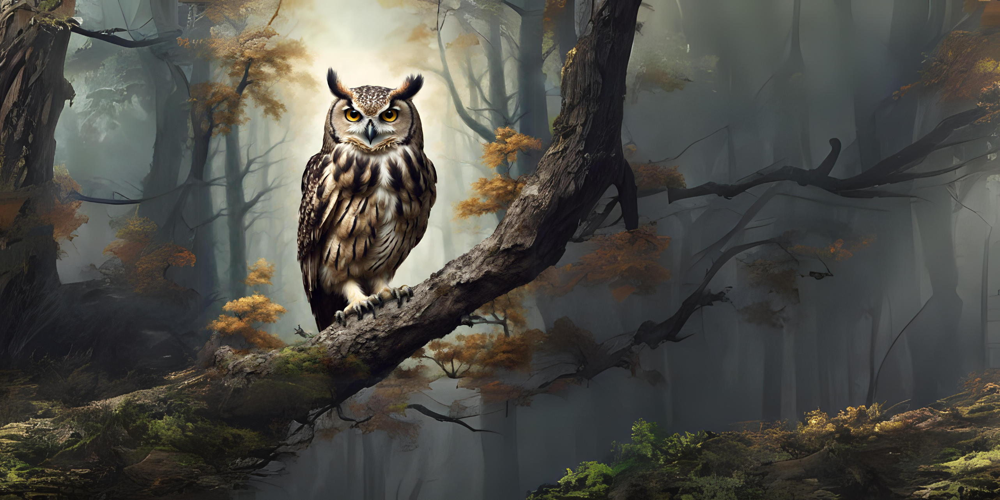
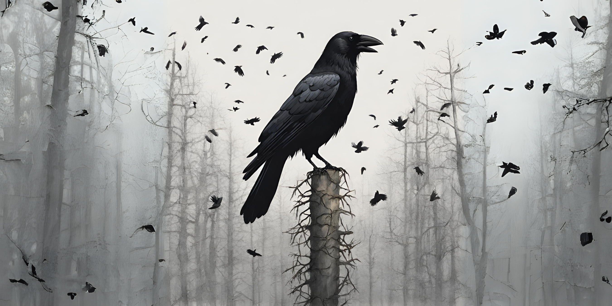

Burung Beo

Rata-rata usia hidup Burung Beo sekitar 20-30 tahun. Namun ada spesies Burung Beo tertentu dapat hidup lebih dari 80 tahun meski tidak umum
credit : www.liputan6.comBurung Hantu
burung hantu hampir tidak mengeluarkan suara saat terbang. Hal ini karena burung hantu memiliki bulu khusus yang memecah turbulensi menjadi arus yang lebih kecil sehingga meredam suara saat terbang.
credit : www.liputan6.comElang

Ketika seekor burung elang mencapai umur 40 tahun, ia akan mengalami fenomena bulu rontok. Selain itu, seekor burung elang di usia tersebut juga akan memiliki bentuk paruh yang semakin mengarah ke bawah. Fenomena kerontokan pada bulu burung elang akan berakibat sulitnya menggerakkan sayap untuk terbang di udara.
credit : www.liputan6.comGagak
Burung gagak memiliki keistimewaan berupa ukuran otak yang besar. Karena itu, hewan ini disebuat sebagai hewan pintar.
credit : www.liputan6.comMacaw

Bahkan burung macaw terbesar, macaw eceng gondok atau hyacinth macaw, memiliki panjang mencapai hampir 106 sentimeter dari paruh hingga ujung ekor. Tak sampai di situ, burung macaw juga mempunyai sayap yang lebar hingga 152 sentimeter.
credit : www.liputan6.comKalkun

Kalkun dapat bertelur 10-12 biji dalam sekali musim kawin. Telur-telur ini keluar satu per satu setiap harinya dalam periode hampir 2 minggu. Setelah itu telur akan menetas setelah berumur 28 hari.
credit : www.liputan6.com